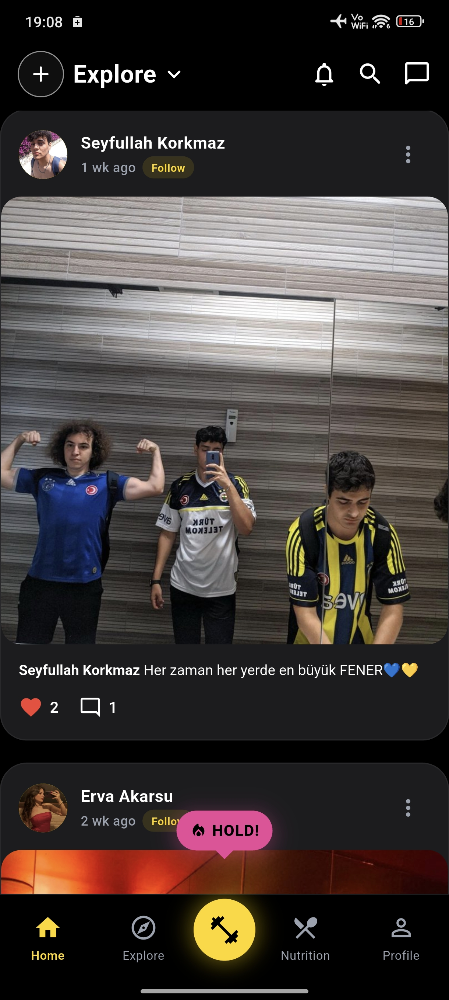
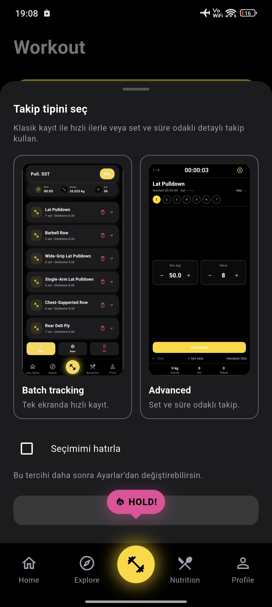
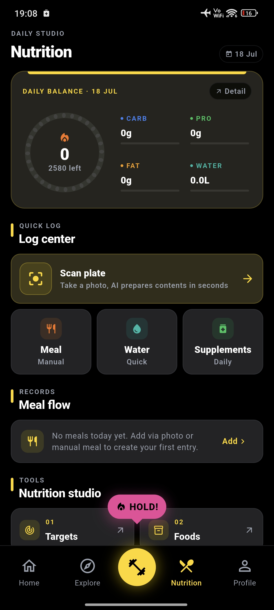
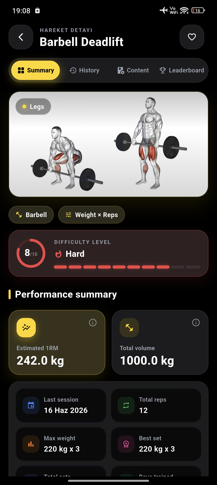

Dağınık ilerleme
Antrenman, ölçüm ve beslenme verileri farklı yerlerde kalınca gerçek gelişimi okumak zorlaşır.
03 / Fitness · Social · Mobile
Antrenman, beslenme, koçluk ve sosyal deneyimi parçalı uygulamalardan çıkarıp sporcu ile koçu aynı ürün ekosisteminde buluşturur.



01 / Problem
Bir uygulama antrenmanı, diğeri beslenmeyi, başka bir araç koçluk ve topluluk tarafını çözüyor. Immense günlük spor yolculuğunu tek, tutarlı bir ürün deneyimine dönüştürüyor.
Antrenman, ölçüm ve beslenme verileri farklı yerlerde kalınca gerçek gelişimi okumak zorlaşır.
Program, geri bildirim ve iletişim ayrı kanallara bölündüğünde hem koç hem sporcu zaman kaybeder.
Fitness yalnızca kayıt tutmak değildir; motivasyon, keşif ve topluluk devamlılığın önemli parçasıdır.
02 / Fark
Immense'in farkı çok sayıda özelliği yan yana koymak değil; sporcunun yaptığı her hareketi sonraki deneyime anlamlı veri olarak taşımaktır.
Program hazırlama, uygulama, takip ve geri bildirim ortak ürün akışında ilerler.
Günlük performans ve beslenme durumu aynı ilerleme hikâyesinin parçaları olur.
Kullanıcı yalnızca veri girmez; içerik, sporcu ve yeni rutinler keşfeder.
Ürün alanları ayrı geliştirilebilen servislerle büyür, tek mobil deneyimde birleşir.
03 / Deneyim
Ürün yalnızca set sayan bir araç değil; hazırlık, uygulama, beslenme, değerlendirme ve paylaşım döngüsünün tamamında kullanıcıyla kalır.
Set, tekrar, ağırlık ve dinlenme akışını salonda dikkat dağıtmayan tek ekranda yönetme.
Hareketleri açıklama, hedef kas ve uygulama ayrıntılarıyla keşfetme.
Kalori ve makro dağılımını günlük hedeflerle birlikte hızlıca izleme.
Sporcu programlarını merkezi biçimde hazırlama, güncelleme ve ilerlemeyi takip etme.
Topluluğun antrenmanlarını, içeriklerini ve gelişim hikâyelerini keşfetme.
Tamamlanan antrenmanı hacim, süre ve kişisel gelişim göstergeleriyle değerlendirme.
04 / Döngü
Bir günün çıktısı bir sonraki planın girdisine dönüşür; deneyim yalnızca kayıt tutmakla kalmaz, devamlılığı destekler.
05 / Ürün ekranları
Beslenme özetinden canlı antrenmana, egzersiz içeriğinden sosyal keşfe kadar ürünün farklı yüzleri aynı görsel sistem içinde kalır.
Product ecosystem
Nutrition dashboard
Workout summary06 / Teknik yaklaşım
Kullanıcı tek, akıcı bir ürün görürken antrenman, sosyal, mesajlaşma ve medya alanları bağımsız servislerle çalışır.
Gerçek zamanlı deneyim ve servisler arası iletişim, ürün alanlarının ayrı ölçeklenebildiği bir backend üzerinde yürür.
07 / İletişim
Ürün, koç pilotu, teknik mimari veya olası iş birlikleri hakkında görüşmek için kısa bir mesaj bırakabilirsiniz.